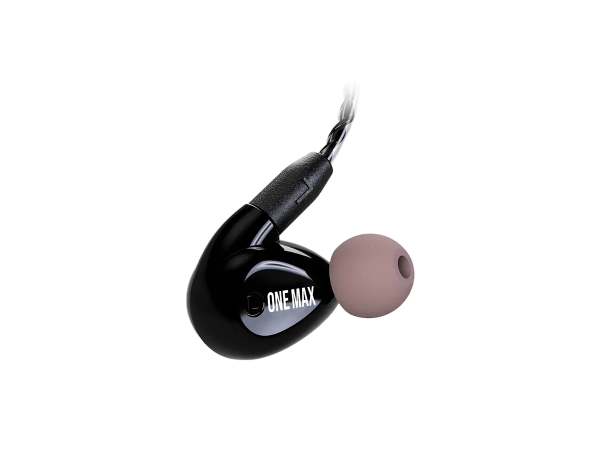

Quatro drivers
Mesma lógica do ONEMAX/PRO: dois no grave, um no médio, um no agudo.
Quatro drivers sem pré-molde
A assinatura da linha PRO, em formato universal.
Pronta entrega — sai em até 2 dias úteis · Garantia de 1 ano · Frete grátis

Quatro drivers de armadura balanceada — dois para graves, um para médias e um para altas — com crossover integrado de três vias. É a forma de ouvir o que você vai encontrar no moldado antes de encomendar o seu. Cabo trançado removível e acoplador acústico 3D.
Mesma lógica do ONEMAX/PRO: dois no grave, um no médio, um no agudo.
Clareza e alta definição sem a aspereza que cansa.
Serve de reserva depois que o seu moldado chegar.
Do retorno de chão ao in-ear
É exatamente pra isso que o atendimento existe. Mas se quiser olhar antes:
Um especialista com você do primeiro contato até a primeira música.